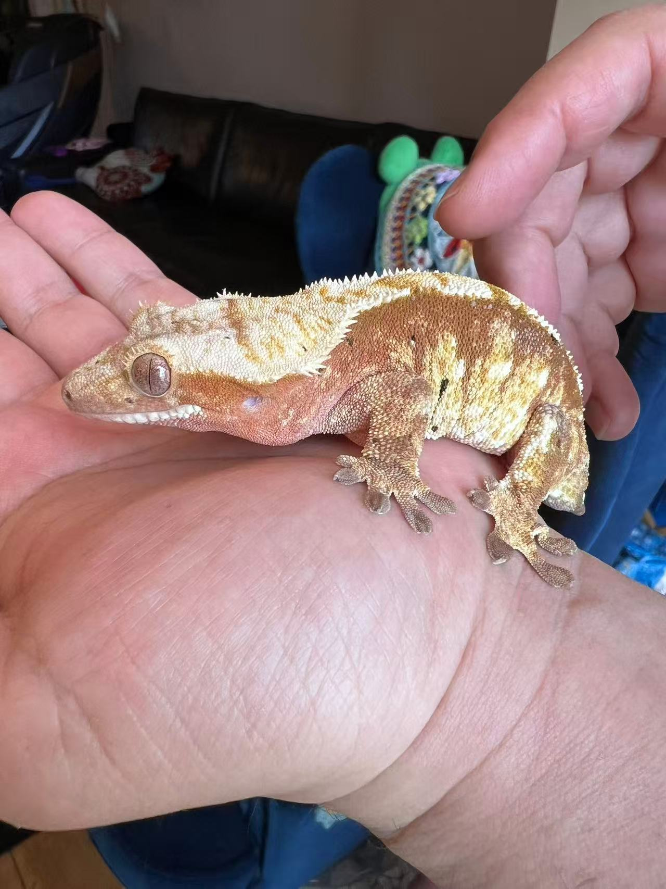
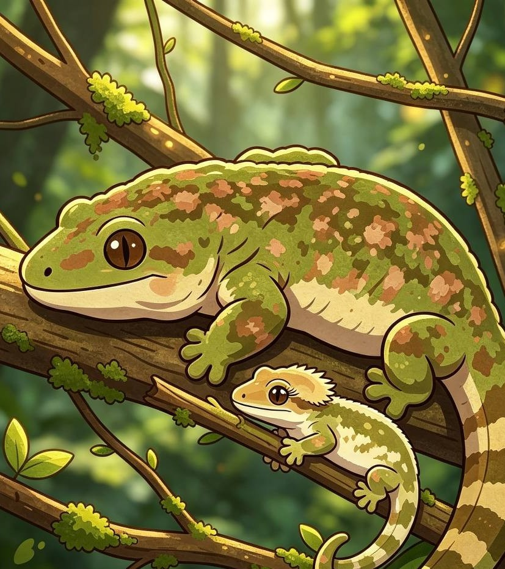
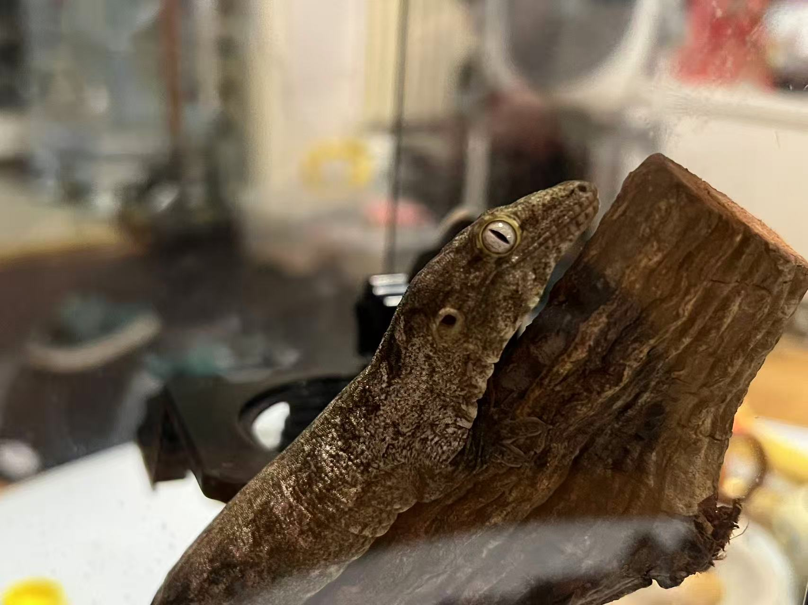
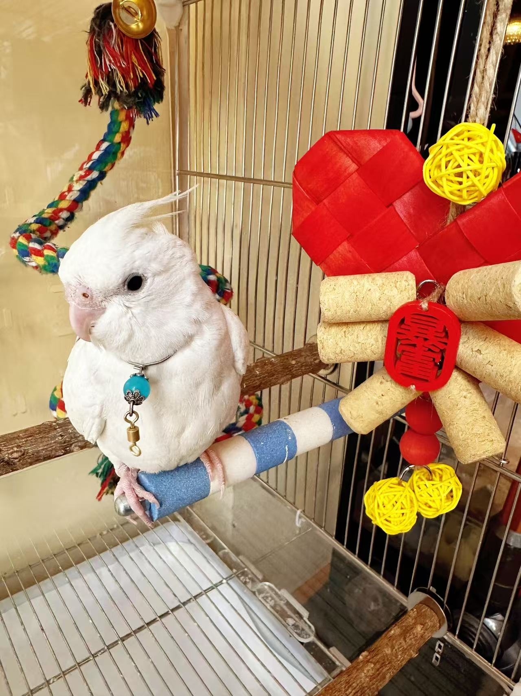
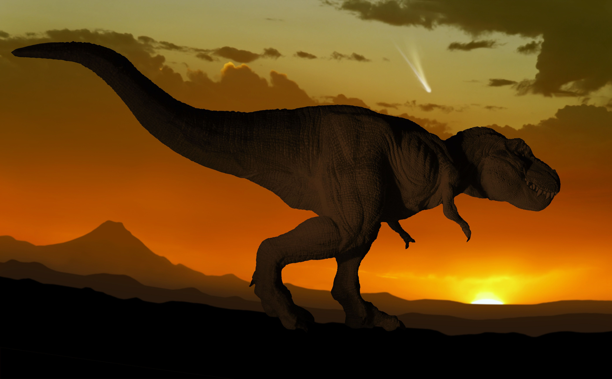

Photo
travel • life • story
欢迎来到我的爬宠频道！

From daily routines to travel stories, I document real life, gentle moments, and every scene worth remembering.
pet profile
recent uploads



about me

欢迎来到我的频道！我一直热衷于古生物研究，恐龙是我的心头好。也正因如此，我对远古爬行动物、两栖动物格外感兴趣。我会翻阅各类资料，也饲养了守宫、蛙和乌龟，在日常观察中，感受跨越亿年的生命故事。
Welcome to my channel! I’ve always been passionate about paleontology, with dinosaurs as my greatest fascination. For this reason, I’m also deeply interested in ancient reptiles and amphibians. I read all kinds of materials, and I keep geckos, frogs and turtles as pets. Through observing them daily, I get to feel the stories of life spanning hundreds of millions of years.
Work with melet's connect